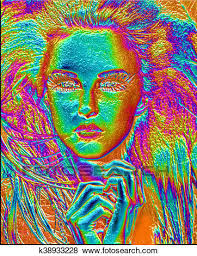
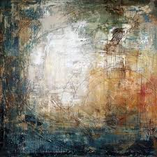

-
Lírica
qualidade de algo sentimental,que se destaca pelo seu excessivo sentimentalismo
-
Poesia Épica
um tipo de poesia narrativa mais curta e breve que mostra similaridades com os contos heroicos.
-
Poesia Dramática
mantem a narrativa épica, mas transfigurava os narradores nos próprios personagens das ações, pintando seus estados emotivos